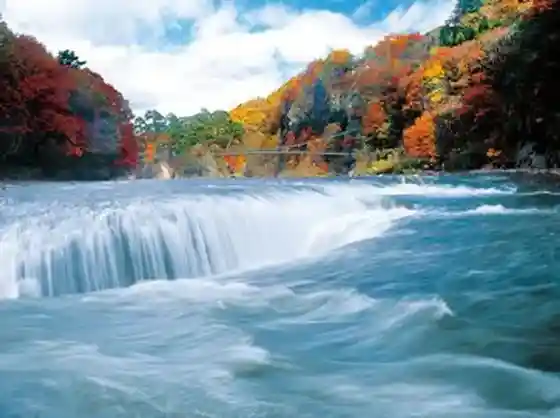
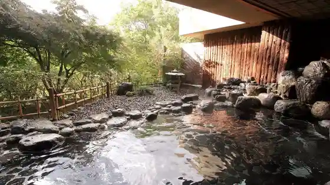
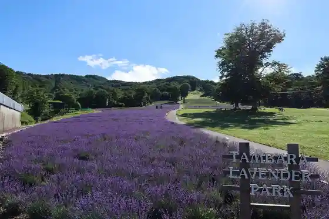
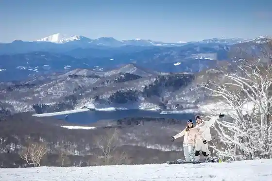

Fukiware Falls
Numata, Gunma · Official / source link

Ro Kami Onsen
Numata, Gunma · 0278-56-3013 · Official / source link

Tambara Rabenda Park
Numata, Gunma · 0278-23-9311 · Official / source link

Tambara Sukii Park
Numata, Gunma · 0278-23-9311 · Official / source link

Sono Hara Dam
Numata, Gunma · 0278-54-8012 · Official / source link
Kajitsu Village Harada Farm
Numata, Gunma · 0278-22-3991 · Official / source link
(Ari) Machida Ya
Numata, Gunma · Official / source link
Numata Tourist Information (Numata Tourism Association)
Numata, Gunma · 0278-25-8555 · Official / source link
Bokyo Baths
Numata, Gunma · Official / source link
Nango Onsen Shakunage Baths
Numata, Gunma · Official / source link
Tone Nishiki ((Kabu) Nagai Honke)
Numata, Gunma · 0278-23-9118 · Official / source link
Sadaijin (Otone Shuzo (Ari))
Numata, Gunma · 0278-53-2233 · Official / source link
Roadside Station Shirasawa
Numata, Gunma · 0278-53-3939 · Official / source link
Kasho Yama Miroku Tera
Numata, Gunma · Official / source link
Numata Park (Numata Joshi)
Numata, Gunma · 0278-25-8555 · Official / source link
Kyu Ubukata Ie House
Numata, Gunma · Official / source link
Kyu Numata Chochiku Ginko
Numata, Gunma · 0278-25-8555 · Official / source link
Kyu Toki Ie Jutaku Yokan
Numata, Gunma · 0278-25-8555 · Official / source link
Ubukata Kinen Bunko
Numata, Gunma · Official / source link
Nango no Magariya (Kyu Suzuki Ie House)
Numata, Gunma · 0278-54-8611 · Official / source link
Shirasawa Kogen Onsen
Numata, Gunma · 0278-53-2010 · Official / source link
Yumoto Katei
Numata, Gunma · 0278-56-4126 · Official / source link
Tambara Kogen Neichagaido
Numata, Gunma · Official / source link
Numata Park
Numata, Gunma · 0278-25-8555 · Official / source link
Kyujitsu Hon Kirisutokyo Dan Numata Kyokai Kinen Kaido
Numata, Gunma · 0278-25-8555 · Official / source link
Tambara Kokia Garden
Numata, Gunma · 0278-23-9311 · Official / source link